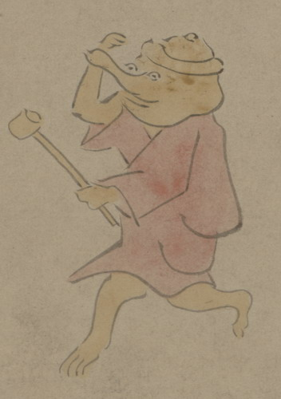

茶釜の化物。頭部が茶釜で、目玉と突き出た鼻、口らしきものがついている。赤い衣を着て、左手に柄杓を持ち、走っている。
出典：親書誌：U426_nichibunken_0150：付喪神絵詞；ツクモガミエコトバ／日付：2010／資源識別子：U426_nichibunken_0150_0082_0000
Copyright (c)2010- International Research Center for Japanese Studies, Kyoto, Japan. All rights reserved.